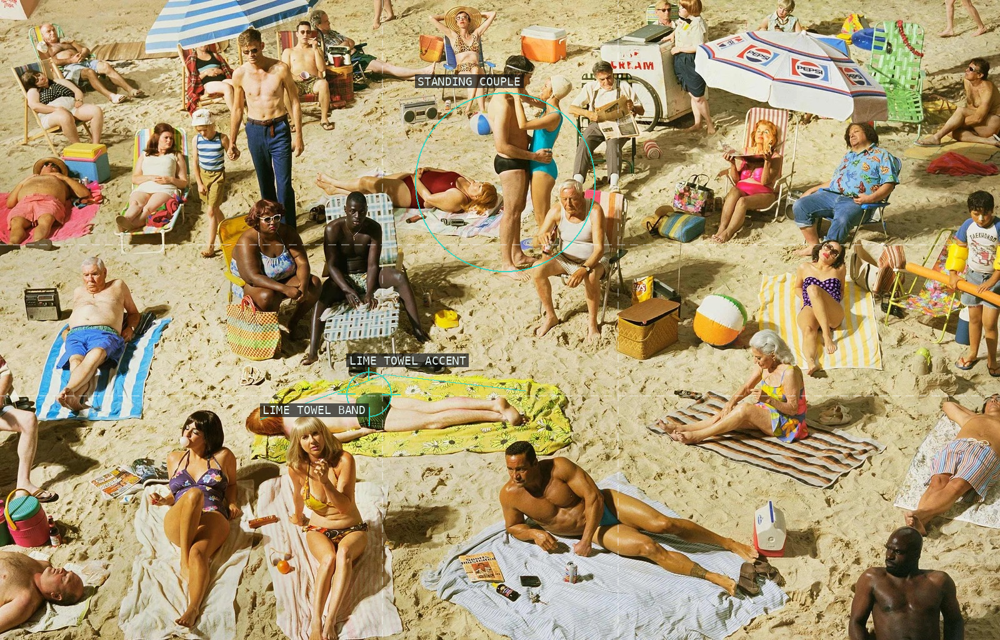
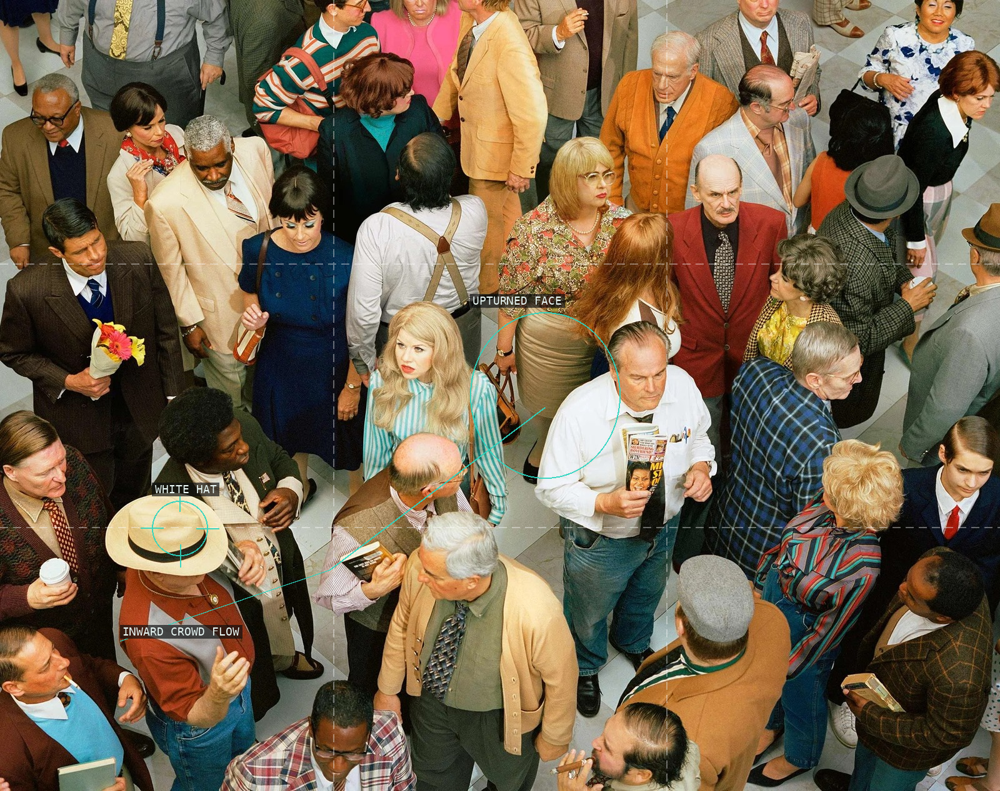
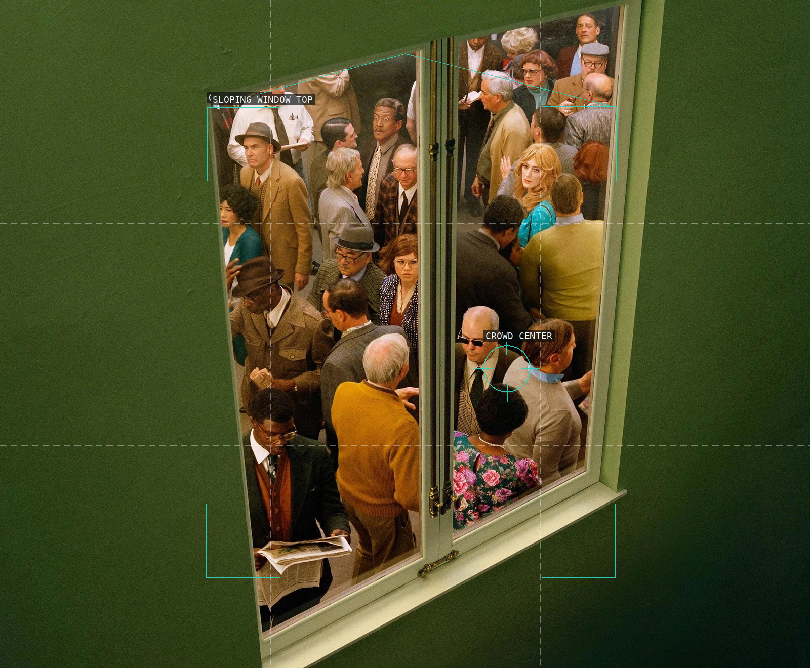
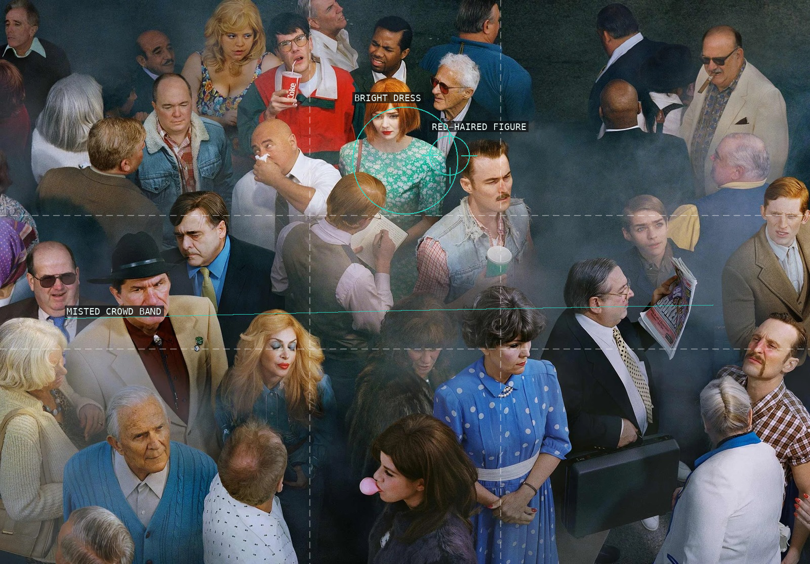
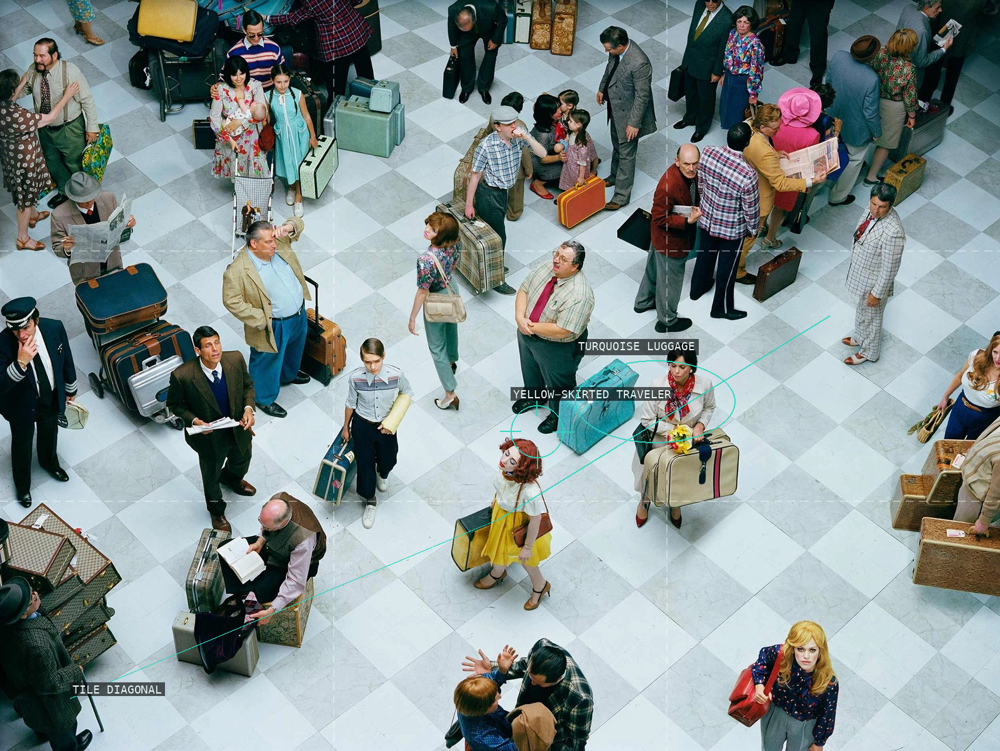
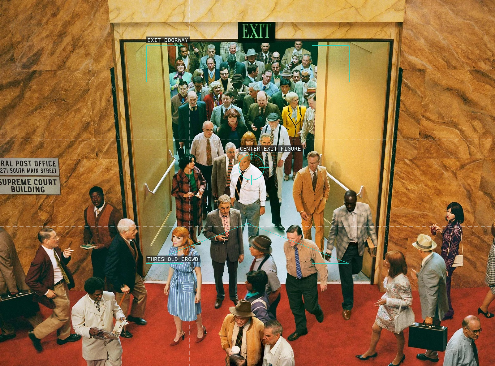
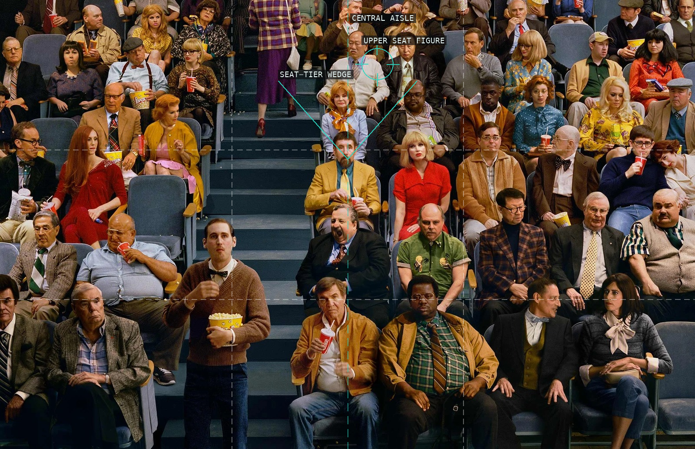
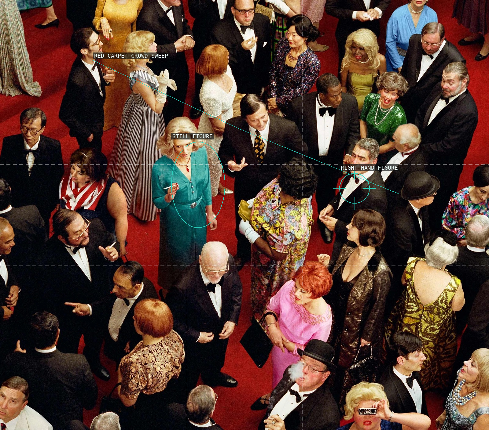
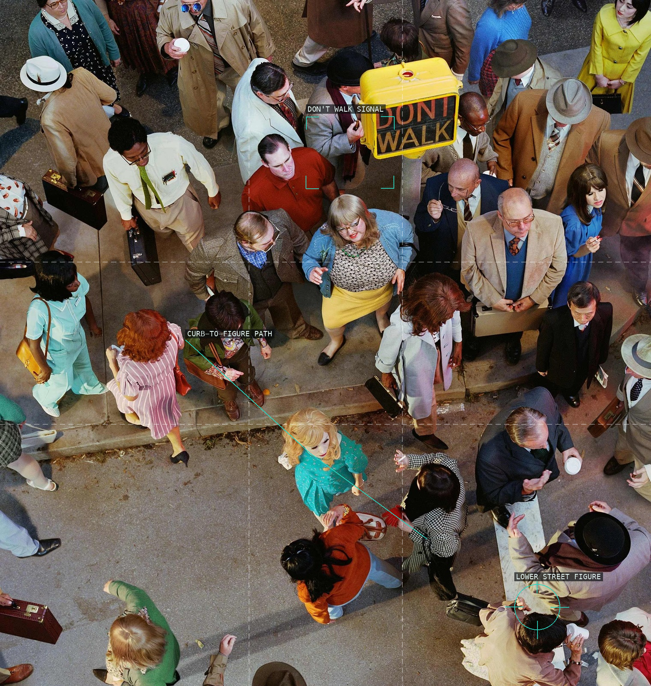
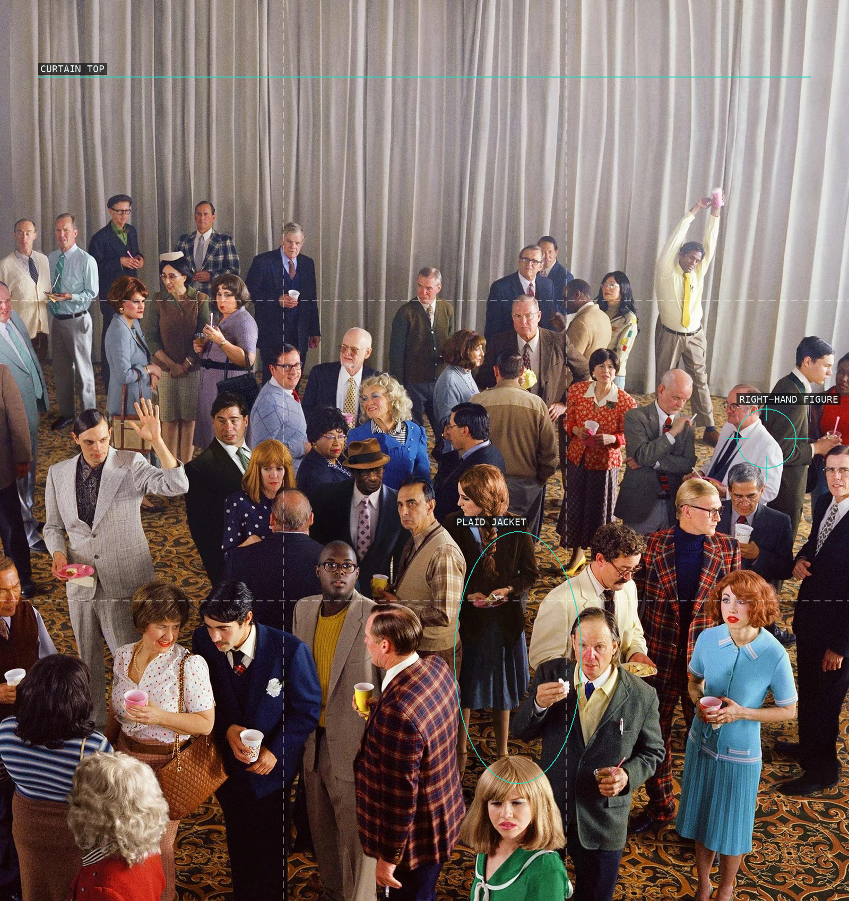

/* alex-prager - proofs */
10 plates. Deterministic overlays rendered by the composition-analysis skill.

01-crowd-3-pelican-beach-2013
Small clusters, towels, and bright costume accents make the beach a deliberately distributed field.

02-crowd-4-new-haven-2013
The blonde striped figure interrupts a dense overhead pattern of heads, shoulders, and floor tiles.

03-crowd-5-washington-square-west-2013
A dark wall and a slightly tilted window turn the gathering into a framed interior stage.

04-crowd-6-hazelwood-2013
A bright central costume holds its ground inside a smoky, laterally compressed crowd.

05-crowd-7-bob-hope-airport-2013
The checkerboard floor gives the waiting figures a loose diagonal rhythm and makes luggage an active color cue.

06-crowd-8-city-hall-2013
The rigid exit portal compresses a long line of figures before releasing them onto the red-carpet foreground.

07-crowd-9-sunset-five-2013
Tiered seating makes spectators read in rows while the red blouse interrupts the cool, repeated seats.

08-crowd-10-imperial-theatre-2013
A turquoise figure becomes a calm focal point inside a red-carpet field of overlapping evening dress.

09-crowd-11-cedar-and-broad-street-2013
The signal and a turquoise dress make two clear stops in an otherwise centrifugal street crowd.

10-crowd-12-speedy-click-2013
A high curtain field opens above scattered social knots, with the raised cup acting as a small bright signal.